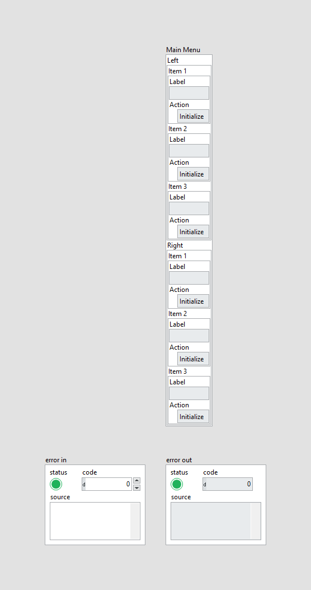
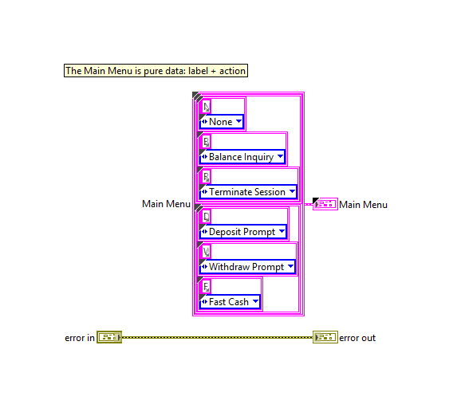
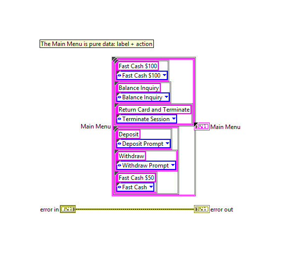
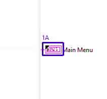
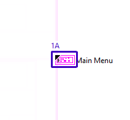
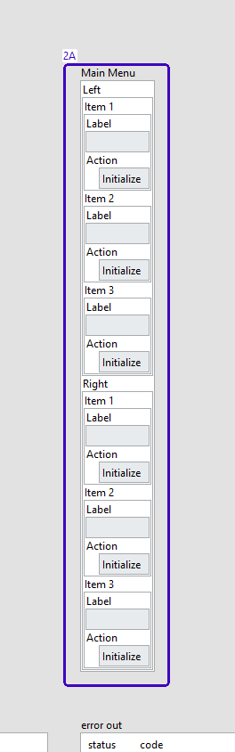

LabVIEW VI Comparison Report
23/11/2026 2:20:05 pm
First VI: C:\Users\PVE\AppData\Local\Temp\vi-diff-1404289653\ATM (100928D-01)\Template\Automatic Teller Machine\SubVIs\Get Main Menu.viSecond VI: C:\actions-runner-cld11\_work\CLD11\CLD11\ATM (100928D-01)\Template\Automatic Teller Machine\SubVIs\Get Main Menu.vi
| Front Panel Overview | ||

|
 | |
| Block Diagram Overview | ||
|
 |
 |
- Front Panel
- Front Panel Position/Size
- Block Diagram Functional
- Block Diagram Cosmetic
- VI Attribute
Detailed Information
1. Block Diagram objects
| C:\Users\PVE\AppData\Local\Temp\vi-diff-1404289653\ATM (100928D-01)\Template\Automatic Teller Machine\SubVIs\Get Main Menu.vi | C:\actions-runner-cld11\_work\CLD11\CLD11\ATM (100928D-01)\Template\Automatic Teller Machine\SubVIs\Get Main Menu.vi | |
|
 |
 |
- Front Panel Terminal "Main Menu" - numeric representation : changed from "'Main Menu': typedef 'ATM Menu.ctl'\r\ncluster of 2 elements \r\n 'Left': typedef 'ATM Menu Side.ctl'\r\n cluster of 3 elements \r\n 'Item 1': typedef 'ATM Menu Item.ctl'\r\n cluster of 2 elements \r\n 'Label': string \r\n 'A" to "'Main Menu': typedef 'ATM Menu.ctl'\r\ncluster of 2 elements \r\n 'Left': typedef 'ATM Menu Side.ctl'\r\n cluster of 3 elements \r\n 'Item 1': typedef 'ATM Menu Item.ctl'\r\n cluster of 2 elements \r\n 'Label': string \r\n 'A"
2. Front Panel - Type Definition
| C:\Users\PVE\AppData\Local\Temp\vi-diff-1404289653\ATM (100928D-01)\Template\Automatic Teller Machine\SubVIs\Get Main Menu.vi | C:\actions-runner-cld11\_work\CLD11\CLD11\ATM (100928D-01)\Template\Automatic Teller Machine\SubVIs\Get Main Menu.vi | |
|
 |

|
- Enum - number of text items : changed from "15" to "16"
3. VI Attribute - Documentation (VI Properties)
- description text : changed from "Returns the ATM Main Menu as data: for each of the six function buttons the label shown beside it and the state the main state machine runs when it is pressed. Left side: None, Balance Inquiry, Return Card and Terminate. Right side: Deposit, Withdraw, Fast Cash $50. To change the menu, edit the Main Menu constant; the main state machine needs no change. Error behaviour: error in is passed to error out unchanged; the menu is returned in every case." to "Returns the ATM Main Menu as data: for each of the six function buttons the label shown beside it and the state the main state machine runs when it is pressed. Left side: Fast Cash $100, Balance Inquiry, Return Card and Terminate. Right side: Deposit, Withdraw, Fast Cash $50. To change a label or to move an item to another button, edit the Main Menu constant; the main state machine needs no change for that. An item with a NEW action also needs a new item in ATM States.ctl and a case for it in the main state machine - an action without a case of its own runs the "None", Default case and does nothing. Error behaviour: error in is passed to error out unchanged; the menu is returned in every case."